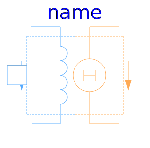
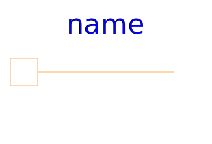

This package contains the basic components of quasi static flux tubes package.
| Name | Description |
|---|---|
| Zero magnetic potential | |
|  ElectroMagneticConverter | Electro-magnetic energy conversion |
|
|
Constant reluctance |
|
|
Constant permeance |
|
|
Leakage reluctance with respect to the reluctance of a useful flux path (not for dynamic simulation of actuators) |
| For modelling of eddy current in a conductive magnetic flux tube | |
| Idle running branch | |
|  Short | Short cut branch |
| Crossing of two branches |